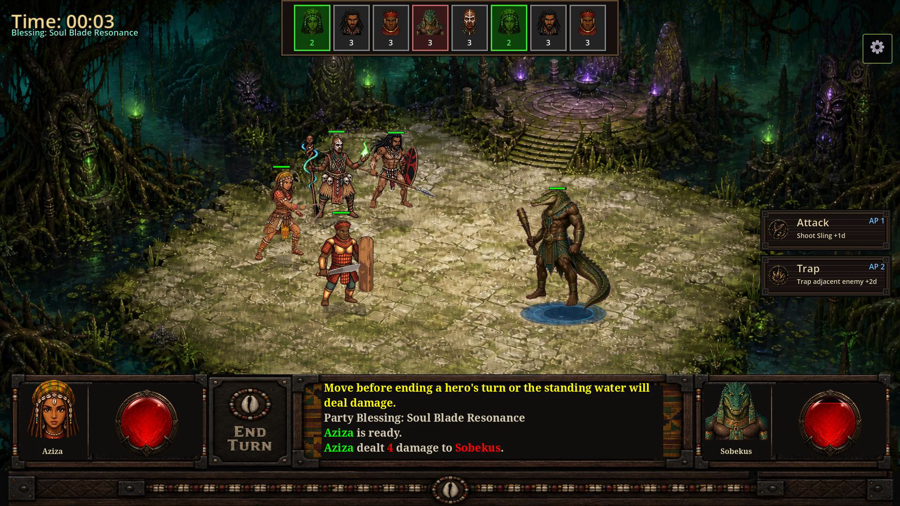
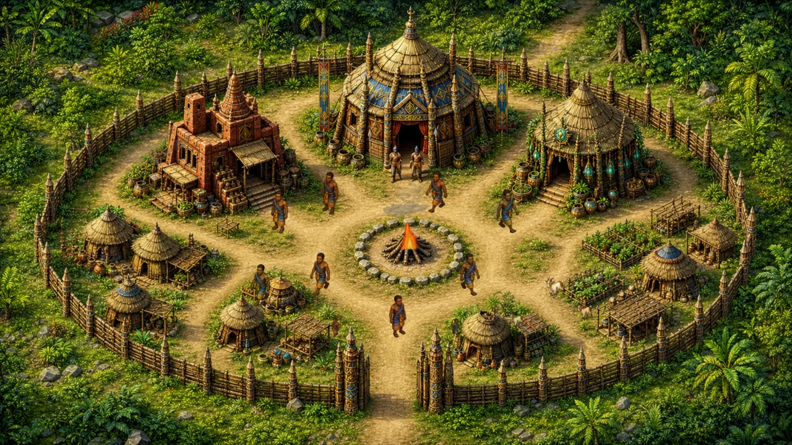
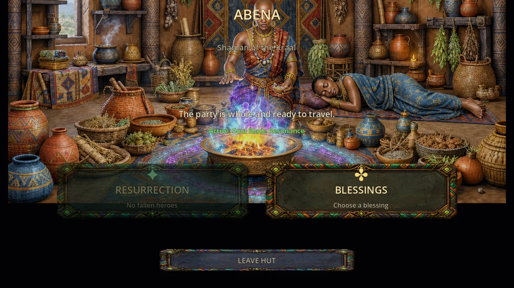
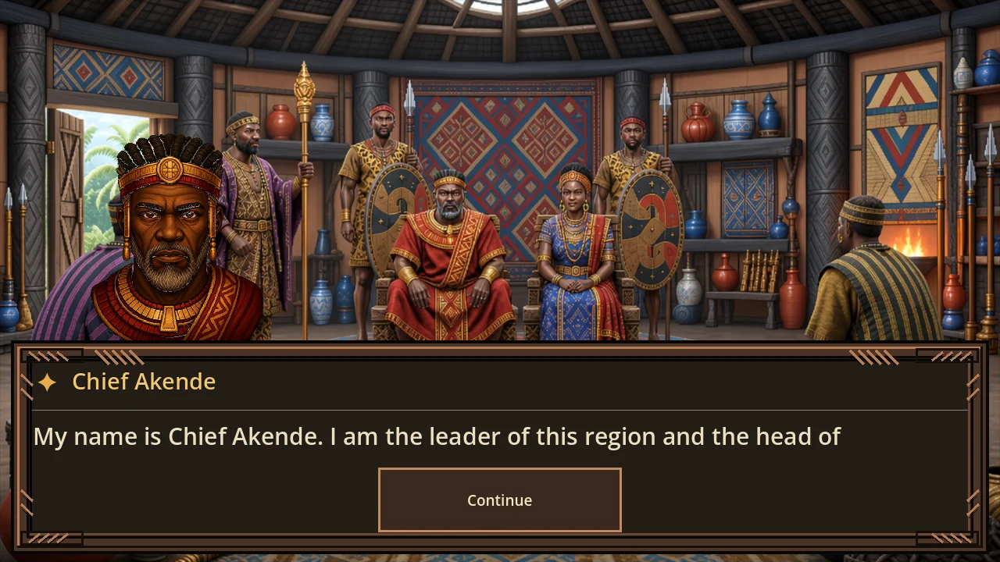
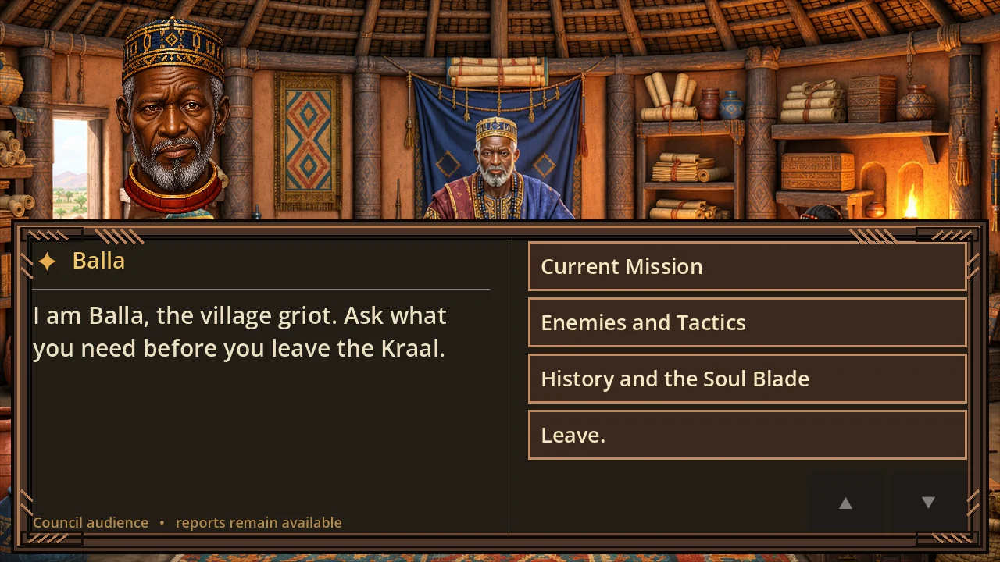

01 / 05A tactical turn-based RPG / Fall 2026
Restore theSoul Blade
A land and its people, once unified by the Soul Blade, now stand divided. Lead four heroes to restore the shattered Blade and reunite the Kingdoms of Bomende.


The journeyScroll to move through Bomende
The road is the story
Explore the
regions of
Bomende
The Water Road
Where movement is survival and the lower blade waits beneath the flood.
The Ancestral Road
Where Amokye keeps the hilt with the dead, and the dead remember the kingdoms.
The Forest Road
Where the canopy hides medicine, old grievances, and the upper blade.
The Royal Road
Where the Soul Core and the truth of the old agreement wait in the dark.
Bida's Lair
Where the restored blade finally reaches the barrier and the old agreement ends.
06The cinematic trailer
Video not playing? Open the trailer directly.
01The signal
A kingdom split along old roads
Prosperity had a price. Unity has one now.
Bomende was once joined by four roads and one council. When the Soul Blade shattered, the roads closed with it. The dead rose. The guardians turned. Every kingdom started to blame the next.
Upanga is a compact, story-led RPG about tactics, consequence, and what it takes to share power again.




04° / 13° / 26°
02The relic
It was a symbol of their shared unity that bound the Kingdoms together
The Soul Blade was forged by the kingdoms together, then broken under the force of imprisoning Bida. Its four pieces are guarded across the Crypt, Swamp, Kwae, and Pyramid.
See the regions ↓03 / The regionsScroll the route
Bomende / the route map
Four roads.
One way through.
The Water Road
Recover the lower blade from Sobekus and reopen the route used by food, people, and trade.
GuardianSobekusFragmentLower blade
The Ancestral Road
Amokye guards the hilt beneath a city of restless ancestors.
GuardianAmokyeFragmentThe hilt
The Forest Road
Medicine, timber, and old grievances wait beneath the canopy.
GuardianThe canopyFragmentUpper blade
The Royal Road
The Soul Core and the original record of the old agreement are sealed inside.
GuardianThe old agreementFragmentSoul Core
The End of the Road
When the blade is reforged, the road leads to the barrier's other side.
GuardianBidaDestinationThe barrier
04The party

01 / 04 Active dossier
THE WARRIOR
Osa
Duty is a blade that cuts both ways.Scroll to move through the party ↓
01 / 04
The Warrior
Osa
The last of the royal guard carries his shield like a promise. He will restore his honor by reforging the Soul Blade.
FrontlineGuardShield
Force 86Guard 90
AbilitiesSword SlashShield Bash
02 / 04
The Scout
Aziza
A shadow between heartbeats. Aziza moves through danger with an ancient sling and a truth that was stolen from her people.
SkirmishStealthTrap
Range 88Focus 72
AbilitiesTrapShadow Step
03 / 04
The Shaman
Nganga
He listens where others only see silence. Nganga communes with ancestral spirits to heal the living and protect the spirit world.
SupportSpiritRitual
Focus 94Range 76
AbilitiesDiseaseHeal
04 / 04
The Shapeshifter
Kishi
An outcast with an insatiable hunger, Kishi fights to control the beast inside him—and find a path back to the people he lost.
PowerWildChange
Force 78Focus 83
AbilitiesShapeshiftRend
05The opposition
06The guardians / boss archive
01 / 05 Active guardian
THE BONE WARDEN
Amokye
The dead answer when he calls.Scroll to move through the guardians ↓
01 / 05
The Bone Warden
Amokye
The crypt answers when Amokye calls. His encounter alternates between direct pressure, summons, a chamber-wide pulse, and escalating bone fury.
MeleeSummonerPhase boss
Vitality 32Enrage 25%
Special abilities
Bone CallOpens by summoning Obambo Hunters; at half health, calls an Obambo Guard. The encounter caps active summons at two.
Crypt PulseEvery third turn, the crypt shakes for 3 damage to every living hero. It can also answer incoming damage.
Damage InterruptAfter taking damage, Amokye can answer with a melee strike, pulse, summon, or reposition.
Bone FuryAt 25% health, his basic attack rises from 2 to 3 damage.
02 / 05
The Drowned Gate
Sobekus
Sobekus makes the arena itself hostile. Cracks warn where the water will rise, while the crocodile’s control tools punish anyone who loses an escape route.
MeleeFlood hazardsFinal phase
Vitality 48Flood tiles 2 → 3
Special abilities
Drowned GateTelegraphs cracked tiles one turn before they flood; standing water deals 2 damage at turn end and lasts for two boss turns.
Death RollIn the Keeper phase, seizes an adjacent hero, deals repeated 2-damage hits, and drags them into nearby flooded ground when possible.
Tail WhipDeals 5 damage and knocks an adjacent hero away. It can also retaliate immediately after a melee hit, with a higher chance on harder difficulties.
Keeper’s RoarIn the final phase, Sobekus becomes more aggressive and floods three tiles instead of two; the mire can restore his health when he moves through it.
03 / 05
The Seal Warden
Aker
Aker’s defense is a living puzzle. Two cleanseable seal anchors absorb part of incoming damage while priests can restore the Warden or charge the seal.
Melee / pulse2 seal anchorsHalf-health phase
Vitality 52Anchors 2
Special abilities
Seal AnchorsTwo active anchors reduce incoming damage. Cleanse them to weaken Aker’s armor; priests can rebuild the seal charge.
Seal EruptionMarks tiles before they erupt, damaging heroes who remain on the warning pattern. Below half health, the pattern expands.
Soul LanceA targeted seal cast that consumes 1 AP and strikes a hero for 4 base damage, increasing with seal charge.
Fractured BurstAfter the seal fractures, Aker can burst around a clustered hero group; higher seal charge increases its reach and damage.
04 / 05
The Rootbound
Sasabonsam
Sasabonsam turns speed into pressure. His opening howl establishes the fight, then health thresholds unlock roots and a sudden charge into the frontline.
MeleeFast turnsPhase boss
Vitality 52Speed 16
Special abilities
Howl of the Deep KwaeOpens the battle, then returns every other turn; recurring howls leave every living hero Snared.
Rootbound CallAt 50% health, targets the weakest living hero for 5 damage and Jungle Snare, costing that hero 1 AP on their turn.
Treefall LungeAt 25% health, charges beside a nearby hero and crashes down for 8 damage before continuing the pressure.
Rapid CadenceSpeed 16 gives Sasabonsam roughly twice the normal turn frequency.
05 / 05
The Threefold Coil
Bida
One coiled body, three independently targetable heads. The head anchors are part of one Guardian encounter, so Bida appears here as a single entry rather than a duplicate head card.
Melee / ranged3 head anchorsPhase boss
Vitality 88Heads 3
Special abilities
Threefold VitalityThree head anchors can be targeted independently; the protected center anchor controls the group’s movement.
Group SlitherThe body stays rooted while the three-head group repositions as a unit to close angles and pressure the party.
Venom BiteHeads can attack with a close bite or switch to a ranged venom projectile when distance calls for it.
Hoard EchoesEach outer-head defeat advances the phase and summons a Hoard Echo, up to two phase transitions.
06The horizon
The first road opens in
Fall
2026
Upanga: The Soul Blade is a solo developed game planned for the Android, Apple, and Steam platforms. Follow our social media for new captures, changelogs, and release news.